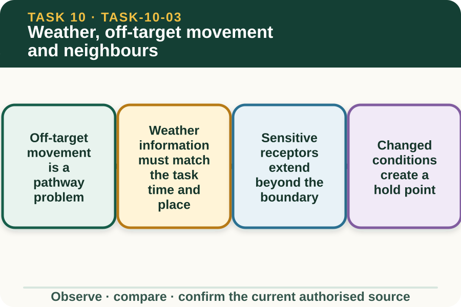
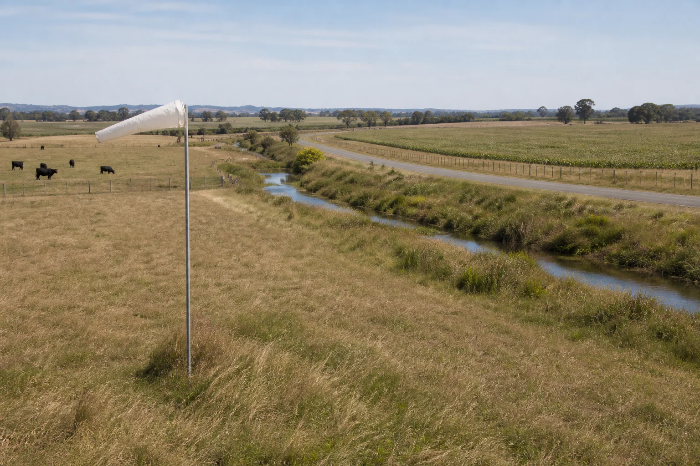

Learning purpose
Trace how conditions and surroundings affect the risk decision and when work must pause for authority.
Task 10 · Lesson 3 of 4
Trace how conditions and surroundings affect the risk decision and when work must pause for authority.
Learning purpose
Trace how conditions and surroundings affect the risk decision and when work must pause for authority.
Success criteria
Learning boundary
Supplementary learning and formative practice only. Current RTO assessment, local procedures and authorised supervision control real work.

Off-target movement means material reaches somewhere outside the intended area. A useful risk discussion traces a source, movement pathway and receptor such as people, livestock, vegetation, water, product or neighbouring land.
This pathway model supports recognition without prescribing a real task. Product behaviour and acceptable conditions remain controlled by the current label, local plan, current weather evidence and supervisor.
Wind, temperature, humidity and changing conditions may affect a chemical task, but a learning site must not set universal limits. The current product source and workplace plan determine which observations matter and how they are judged.
Check source, issue time, location and review point. A forecast can support planning, while local observations help identify change; neither should be used outside the authorised decision process.

Planning should identify people, dwellings, roads, water, livestock, crops, habitat and other sensitive areas that could be affected. The relevant receptor depends on the real property and task, so the supervisor must verify the local map and communication requirements.
Do not publish a real neighbour's name, address, contact details or precise property map. Use fictional zones for learning and the controlled workplace system for any real communication.
A hold point is a planned pause where current evidence must be reviewed before the next authorised stage. It is especially important when weather, people, animals, access or surrounding activity differs from the approved plan.
The learner reports the change and keeps the task at the hold point. They do not adjust the product, equipment or work method to compensate for conditions without the current source and supervisor direction.
Fictional worked example
Observed evidence: At 9:25 am on 27 March 2027, a fictional planning scenario shows the work area beside Zone C, where a school bus is now parked unexpectedly. The saved forecast in the class pack is three hours old and a windsock image indicates a changed direction, but no verified current reading is supplied. Decision and reason: Amira cannot confirm that the approved plan still protects the new receptor or that conditions remain suitable. Safe action: She marks the task at the hold point and reports the bus location, source age and observed change to the supervisor. Result: The supervisor checks current sources and the controlled local plan before deciding what happens next. Next check or record: Amira records the changed condition and authorisation outcome without inventing a weather limit or product adjustment.
A useful report names the planned area, changed condition, possible receptor, evidence source and decision required. It avoids claims about harm when none has been established and avoids dismissing a concern because no visible effect has occurred.
Closed-loop communication confirms whether the task remains paused and who will update affected people through the authorised channel. The learner does not contact real neighbours from a public learning activity.
The planning trail should show which current sources were checked, when they were checked, what local changes were observed, who reviewed the concern and what authorised outcome followed. This supports review without reproducing protected workplace documents.
If a source is missing or conflicting, record Teacher/RTO to confirm in staff material or refer through the local process. Do not fill the gap with a generic web rule or a copied answer from another course.
Formative practice
Each option explains the consequence. These answers save only on this device.
Written application
Apply and keep a learning record
On a privacy-safe map, draw arrows from possible source zones to sensitive receptors, attach source timestamps and circle any changed condition requiring review. Do not add product, equipment or operating instructions.
Learning record: A supplementary-learning pathway map with current-source and authority hold points.
Lesson responses and the activity are formative learning only. Formal sufficiency and competence remain with the current RTO process.
Source basis: AHCCHM201 Release 1 requirements to assess meteorological conditions, minimise risk to others and the environment, cease when conditions are unsuitable and complete records; NESA Chemicals focus-area concepts. Exact limits and responses come only from current product and workplace sources.